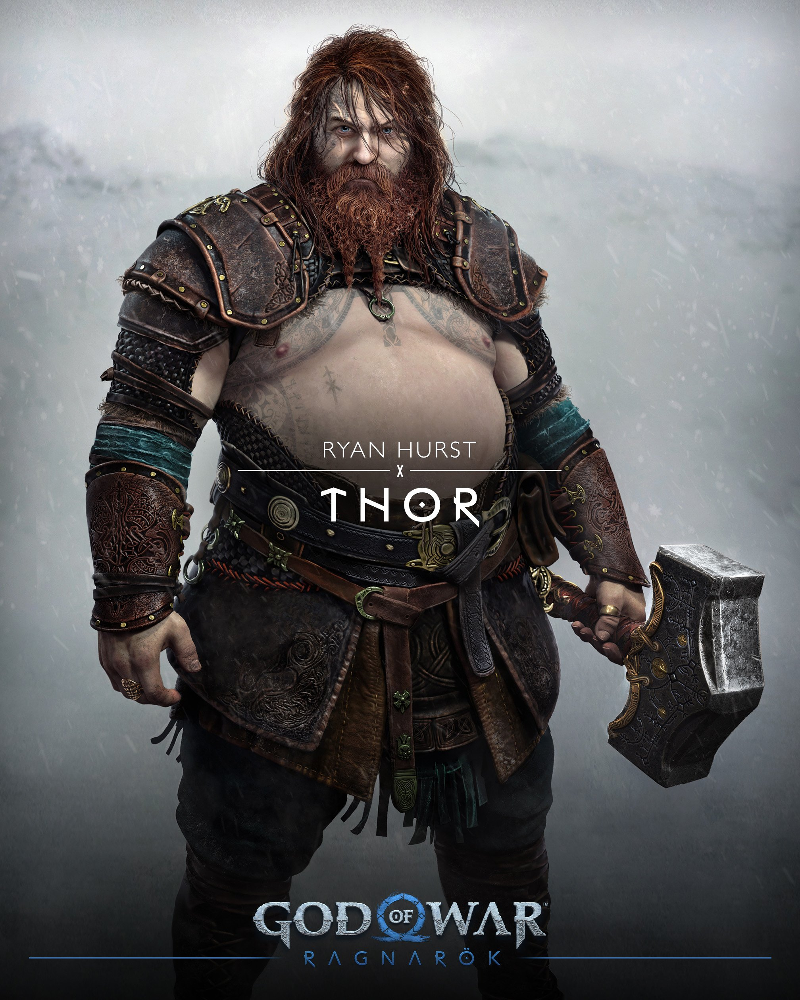
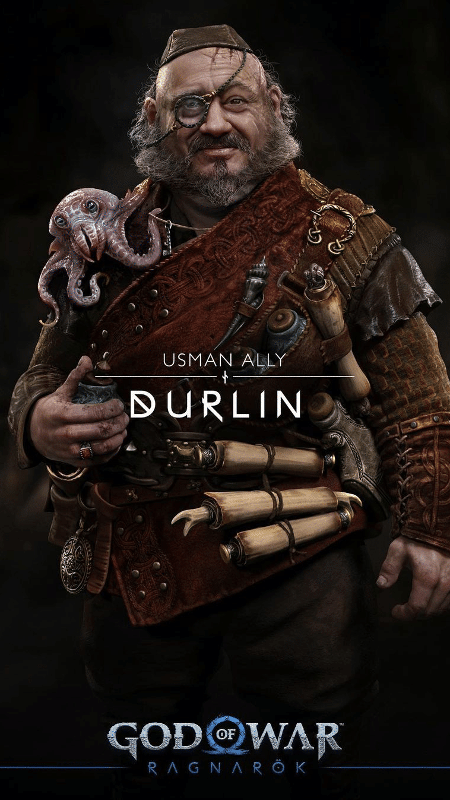

O deus da guerra está de volta, e como o jogo se trata de suas desventuras com as divindades, ele será um dos principais personagens de God of War Ragnarök. Já no trailer, o espartano é cobrado por Atreus, seu filho, para agir mais como um general e parar de pensar como um pai. Conflitos a caminho?
O deus do trovão, filho de Odin, meio-irmão de Baldur, e pai de Modi e Magni — ambos mortos por Atreus e Kratos —, é outro a buscar vingança contra os protagonistas. “Você é sempre uma pessoa calma e sensata?”, é assim que Thor se dirige ao Fantasma de Esparta na única interação disponível no trailer. Esperamos batalhas épicas!
Após descobrir sua origem e seu lugar entre os deuses, Atreus retorna mais maduro e disposto a explorar seu destino. O dilema com seu pai ainda parece persistir, mas desta vez, o jovem precisa desvendar qual o seu papel no fim do mundo nórdico. Há uma profecia, e tudo sugere que o adolescente seja realmente Loki, a chave para o Ragnarök.
Após perder Baldur, seu filho, a feiticeira parece estar com sede de vingança e tem tudo para ser uma das antagonistas mais memoráveis da franquia. Freya aparece no trailer em uma abordagem nada amistosa contra Kratos. Como essa história terminará?
O legado dos gigantes parece não ter acabado de vez com a presença desta garotinha. Angrboda, na mitologia nórdica, é um dos amores da vida de Loki. Como podemos concluir que ela será uma das principais personagens de God of War Ragnarök? Ela simplesmente fecha o trailer de revelação dizendo o seguinte:Você terá suas respostas em breve. Bem, algumas delas.
“O deus da guerra destas terras”, como diz o Fantasma de Esparta. A busca por Tyr, um dos responsáveis por toda a engenharia dentro daquelas câmaras do jogo anterior, será um dos principais personagens de God of War Ragnarök. Kratos e Atreus se dirigem a ele com um pedido de ajuda.
A presença de Durlin no trailer não deixa bem claro o que ele representará dentro do game. Durante sua aparição, Kratos e Atreus conversam sobre medidas para “atrasar o Ragnarök” e encontrar Tyr. Seria ele uma chave para as demais informações?
Um dos anões ferreiros responsáveis por deixar os equipamentos da dupla muito bem cuidados. É o primeiro dos irmãos a aprimorar o Leviatã e um dos artesãos por trás do machado.

O complemento de Brok quando se trata do cuidado com as armas de Kratos e Atreus. Após um período separados no primeiro jogo da série nórdica, eles se resolvem e voltam a trabalhar em conjunto na oficina.